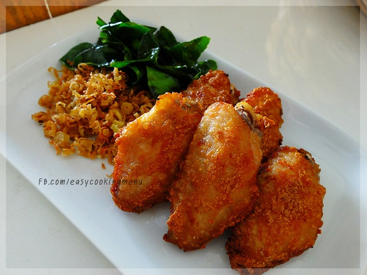

ไก่ทอด
ไก่ เริ่มต้นกันด้วยเมนูไก่ทอดประจำชาติที่ใคร ๆ ก็คุ้นเคยกับไก่ทอดหาดใหญ่ที่มีเอกลักษณ์ความอร่อยไม่เหมือนใคร
ไม่ว่าจะอยู่ที่ไหนก็หาไก่ทอดหาดใหญ่กินได้ทั่วทั้งประเทศ แถมไก่ทอดหาดใหญ่สูตรนี้ยังมีทีเด็ดเคล็ดลับในการทำที่อร่อยไม่เหมือนใครด้วย.
- 1. คั่วเม็ดผักชีและยี่หร่าให้หอม นำไปโขลกรวมกับกระเทียมจนละเอียด จากนั้นนำไปหมักกับไก่ น้ำผึ้ง เหล้าจีน และเกลือป่นให้เข้ากัน หมักทิ้งไว้ในตู้เย็นประมาณ 2 ชั่วโมง
2. นำไก่ไปอบที่อุณหภูมิ 180 องศาเซลเซียส ประมาณ 30 นาทีจนไก่สุก (และระหว่างที่อบไก่ ให้นึ่งข้าวเหนียวไปด้วย) พออบครบ 30 นาที นำไก่ออกจากเตา เตรียมไว้.
- 3. ขั้นตอนการทอด ตั้งกระทะ ใส่น้ำมันถั่วเหลืองลงไปจากนั้นใส่ไก่ที่อบแล้วลงไปทอดประมาณ 10 นาที จนไก่ทอดสุกและกรอบ ตักขึ้นสะเด็ดน้ำมัน จัดไก่ทอดใส่จาน โรยหอมเจียว เสิร์ฟคู่กับข้าวเหนียว
© ไก้ไก้